A walk in the real woodsProcházka skutečným lesem
Walk autumn trails out of Hostomice with Joey the dog. Deer, mushrooms, berries and wildflowers peek out from behind bushes and rocks. Type the name on the sign and it's yours: into the camera, the basket or the herbarium.
Vyraz z Hostomic po podzimních stezkách se psem Joeym. Zpoza keřů a kamenů vykukují srnky, houby, bobule a kytky. Napiš jméno z cedulky a úlovek je tvůj: do foťáku, do košíku, nebo do herbáře.
Everything is real: the trails start on the town square, the places are real places in Brdy, and every animal, mushroom and plant is one you can find there in autumn. The sun crossing the sky is the only clock. Too slow? The animal simply hides again.
Všechno je skutečné: stezky začínají na náměstí, místa jsou opravdová místa v Brdech a každé zvíře, houbu i rostlinu tam na podzim najdeš. Jediné hodiny je slunce na obloze. Nestihneš to? Zvířátko se jen zase schová.
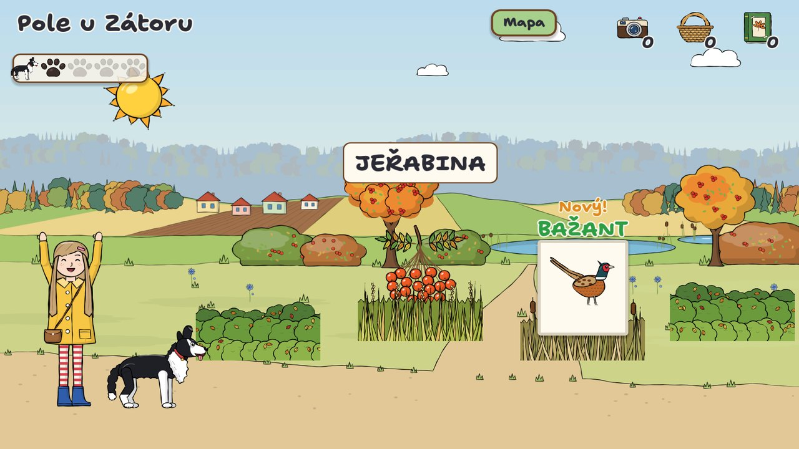
Every find goes somewhereKaždý úlovek má své místo
And the youngest learn the most important forest rule on the way.A ti nejmenší se cestou naučí nejdůležitější lesní pravidlo.
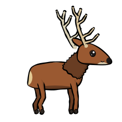
→AnimalsZvířata
Get photographed. Click!Vyfotíš je. Cvak!
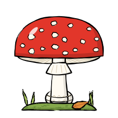
→Poisonous mushroomsJedovaté houby Nesahat!
Photo only. Don't touch!Jen fotka. Nesahat!
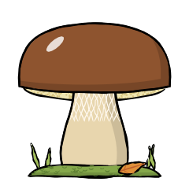
→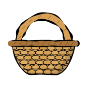
Mushrooms, berries, nutsHouby, bobule, oříšky
Picked into the basket.Do košíku.
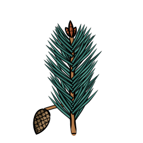
→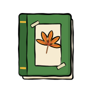
Flowers, leaves, fernsKytky, listy, kapradí
Pressed into the herbarium.Vylisuješ do herbáře.
Three ranks, one familyTři hodnosti pro celou rodinu
Each player picks their own rank, from children who can't read yet to confident readers.Každý hráč si vybere svou hodnost, od dětí, které ještě nečtou, po zdatné čtenáře.
Types the first letter, with a glowing on-screen keyboard. Every name is spoken aloud.Píše první písmenko se svítící klávesnicí na obrazovce. Každé jméno se přečte nahlas.
Short names, for early readers.Krátká jména pro začínající čtenáře.
Full names with exact accents, for confident readers.Celá jména i s háčky a čárkami pro zdatné čtenáře.
A nature atlas to fillAtlas přírody k vyplnění
Every species gets a card with a short factsheet for children, read aloud in Czech or English.Každý druh má kartičku s krátkým povídáním pro děti, přečteným česky nebo anglicky.
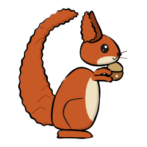
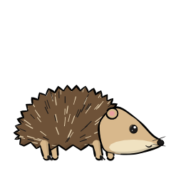
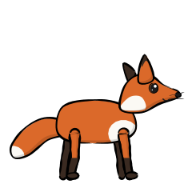
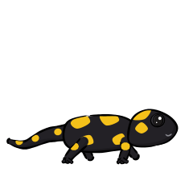
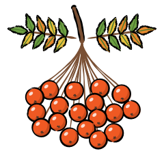
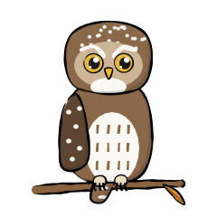
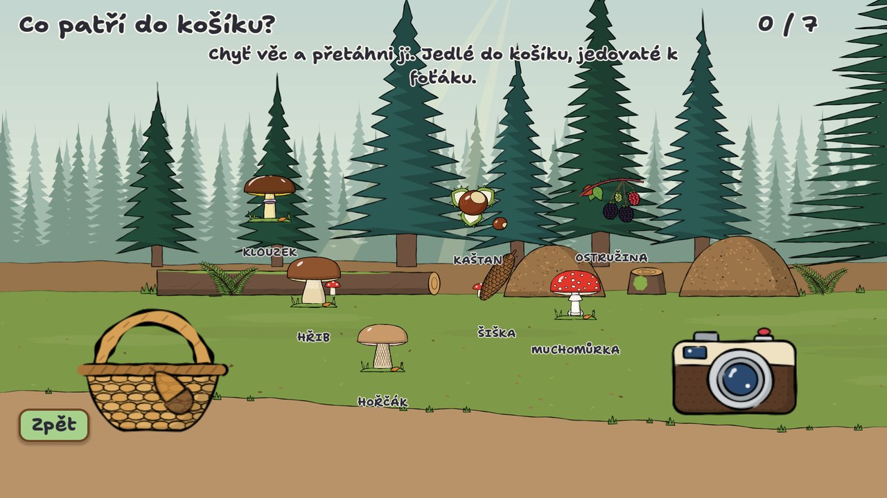
Joey's gamesJoeyho hry
Six mouse mini-games that teach mouse skills step by step. Each one unlocks the next.Šest miniher na myš, které krok za krokem učí zacházet s myší. Každá odemkne další.
- Joey on the trailJoey na stezcemoving the mousepohyb myší
- Falling leavesPadající listíclickingklikání
- What goes in the basket?Co patří do košíku?drag and droptáhni a pusť
- Fog on PlešivecMlha na Plešivcihold and movedrž a táhni
- In the orchardV sadudouble clickdvojklik
- Photo huntFotolovmoving targetspohyblivé cíle
Fabián waits at the endNa konci čeká Fabián
Every trail ends at a real landmark, where Fabián, the kind old forest spirit of Brdy, is waiting. Type his name and he rewards you with cones and a keepsake: his lucky cone, a silver coin, a horseshoe…
Každá stezka končí u skutečného místa, kde čeká Fabián, laskavý starý lesní duch Brd. Napiš jeho jméno a dostaneš šišky a upomínku: jeho šťastnou šišku, stříbrňák, podkovu…
Keep a clean streak and Joey's paw meter fills up. Then he runs off to sniff out something rare: a stag, a fire salamander, a pygmy owl.
Když píšeš bez chyby, plní se Joeyho tlapky. Pak vyrazí vyčenichat něco vzácného: jelena, mloka, nebo kulíška.
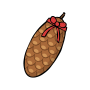
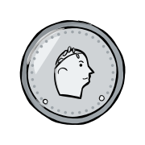
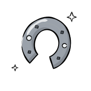
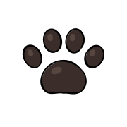
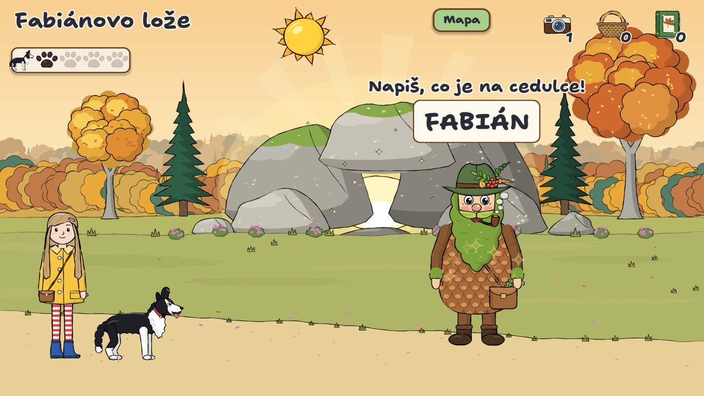
ScreenshotsObrázky ze hry
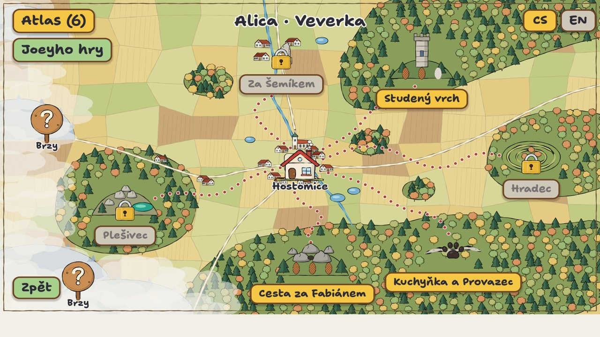
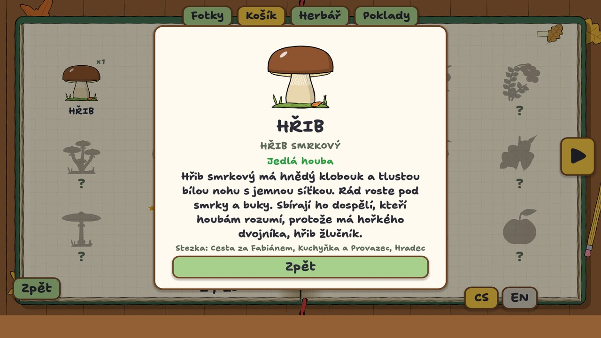
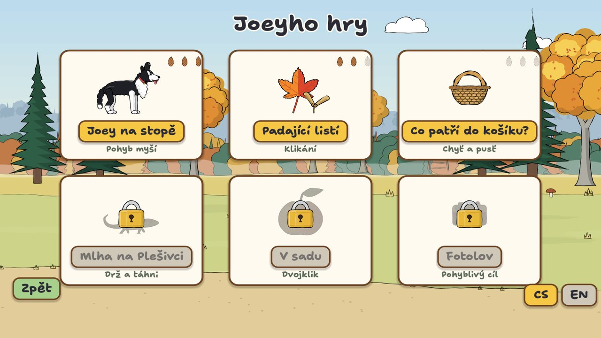
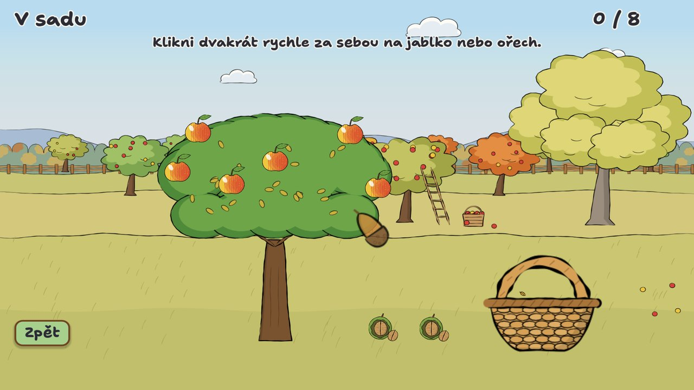
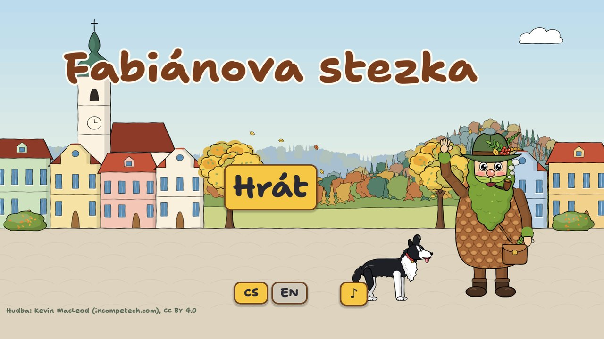
Play itZahraj si
Free, in the browser or as a download for Linux and Windows. No ads, no accounts, no tracking.Zdarma, v prohlížeči nebo ke stažení pro Linux a Windows. Bez reklam, bez účtů, bez sledování.
# or run it from sourcenebo spusť ze zdrojáku (Godot 4.6.3) git clone https://github.com/redrick/fabians-trails godot --path fabians-trails/game